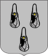

Місто Суми
Головна
Історія міста
Пам’ятки
Альтанка
Спасо-Преображенський собор
Свято-Троїцький собор
Сумський обласний краєзнавчий музей
Скульптурна композиція "Садко"
Карта міста
Цікаві факти
В Сумах не сумують
Місто Суми
Цікаві факти та історія